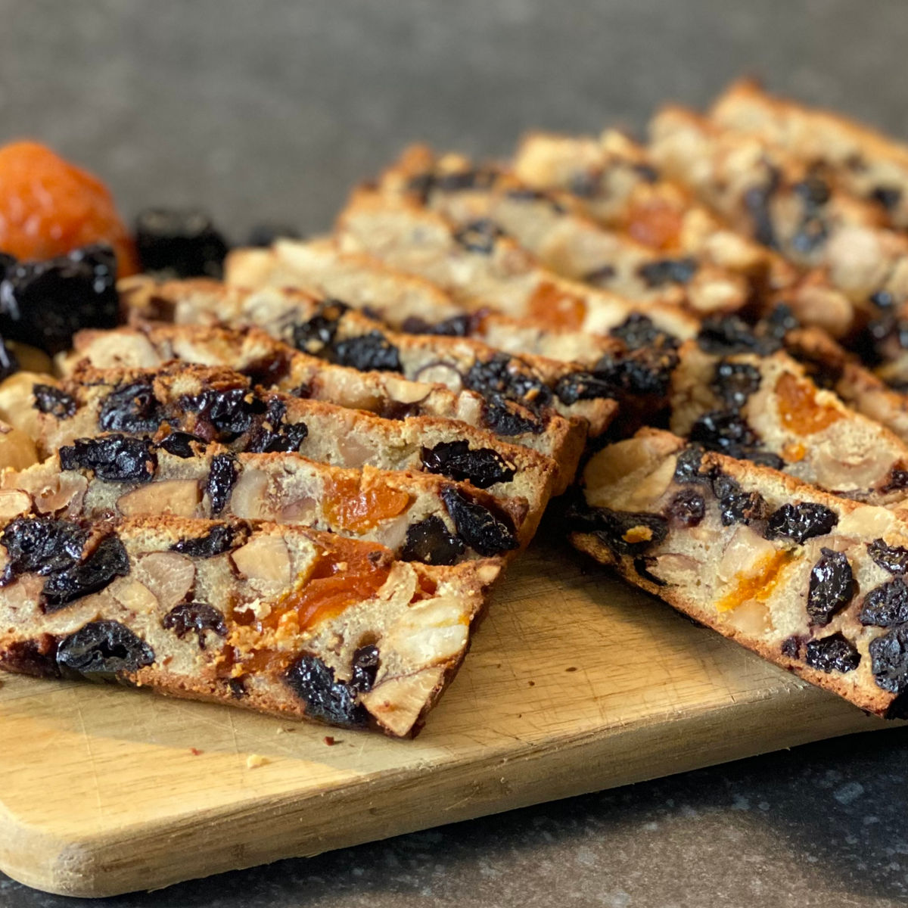
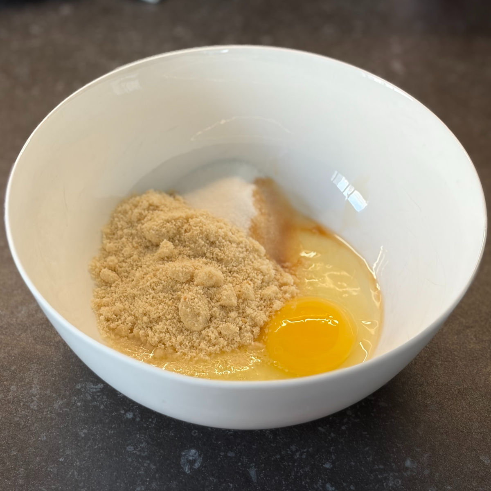
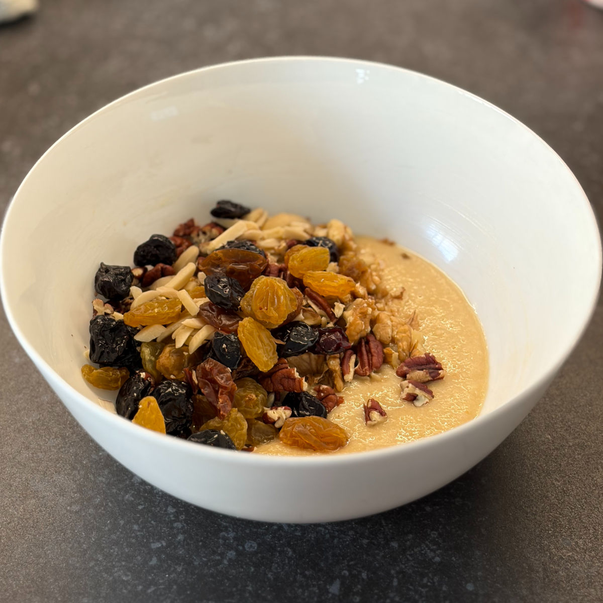
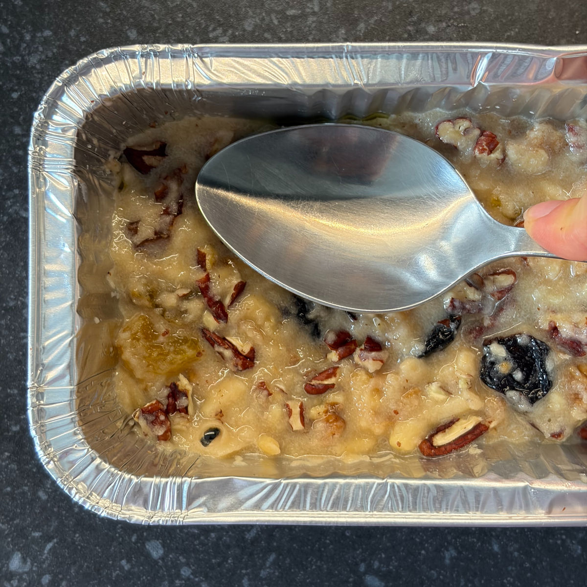
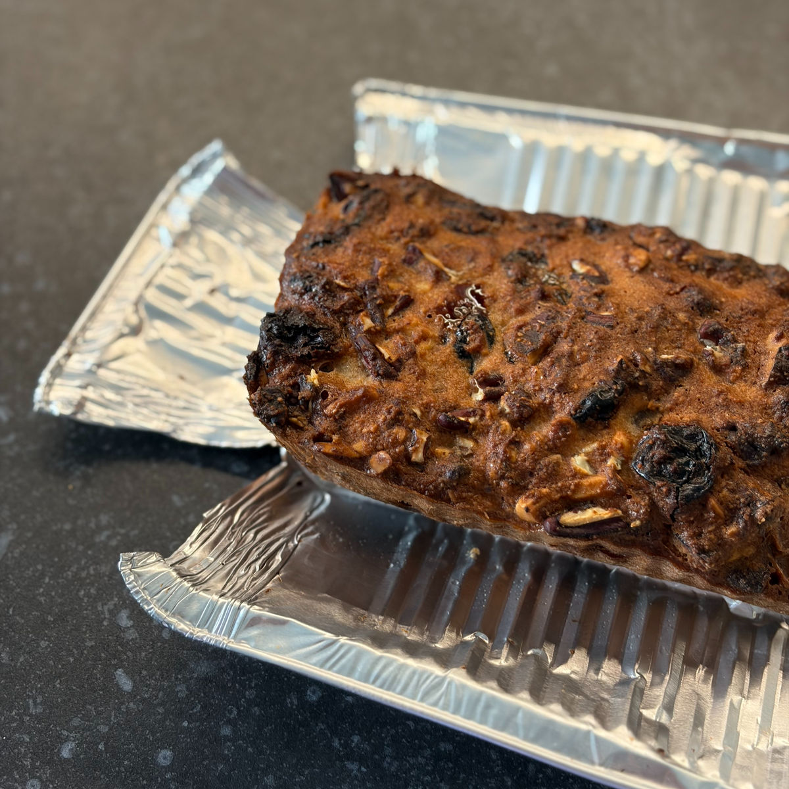
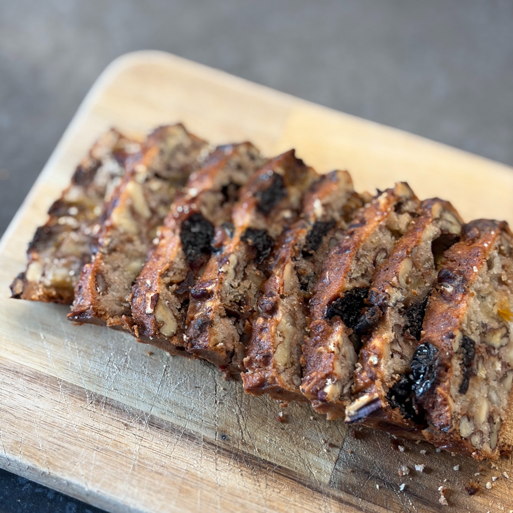

עוגיות לאוניד
עודכן: 5 בספט׳
טבלת ערכים תזונתיים בקירוב:
שימו לב שהערכים משתנים כתלות בממתיק, טבלה זו היא עבור מתכון עם כמות שווה של פקאנים, שקדים, אגוזי מלך ושוקולד 90% מבחינת תוספות. בנוסף שימו לב לכמות הפחמימות בקמח השקדים אני משתמשת באחד עם 9.1 גרם פחמימה עבור 100 גרם .
| ערכים | 3 עוגיות (50 גרם) | 100 גרם |
|---|---|---|
| קלוריות | 277.5 | 555 |
| פחמימות | 8.25 | 16.5 |
| חלבונים | 8.5 | 17 |
מיהו לאוניד?
לאוניד הוא אבא שלי ובאחד מהימים הוא ביקש ממני להכין את העוגיות האהובות עליו , עוגיות פירות יבשים, אך בגרסה בריאה. אמרתי לו שזה בלתי אפשרי, כי כל מה שיש במתכון המקורי זה קמח סוכר ופירות יבשים מסוכרים, אין לי שום בסיס בירא לעבוד איתו.
אבא שלי היה עקשן, קנה כמות ענקית של פירות יבשים ללא סוכר וביקש ממני לנסות בכל זאת. בלית ברירה התחלתי לעבוד על המתכון, החלפתי את הקמח הלבן בכמות שונה של קמח שקדים, השתמשתי בפירות יבשים ללא סוכר ובאגוזים טבעיים. אחרי כמה ניסיונות הרגיש לי שהצלחתי ובגדול!
העוגיות ממש יוצאות דומות לטעם המקור, הן מאוזנות והוספתי תוספות משלי ששדרגו אותן, הן קלות להכנה ואם ממירים את הפירות היבשים לאגוזים בלבד אפשר להפוך אותן למתאימות לקטוגניים ולסכרתיים.
הכי חשוב, אבא שלי התאהב בגרסאה הבריאה של עוגיות האהובות עליו.

מתכון :
תבנית: תבנית אינגליש קייק
מרכיבים :
2 כוסות פירות יבשים (דובדבנים, צימוקים, אוכמניות, חמוציות, משמש, מה שאתם אוהבים....) או אם אתם קיטוגנים / סכרתיים השתמשו במקום באגוזים ושוקולד מריר 90%
1 כוס אגוזים (פקאנים, פיסטקים, שקדים, קשיו מה שאתם אוהבים...) - שילובים טובים בהערות
3 בצים L
1.5 כוסות קמח שקדים
1 כפית תמצית וניל
1 כפית קונייק - לא חובה (אני אוהבת את של חברת Hennessy)
5 כפות (75 גרם) סוויטאנגו / 90 גרם אלולוז / 75 גרם דבש (שימו לב: דבש אינו מתאים לסוכרתיים ולקיטוגנים)
שמן קוקוס / חמאה – לשימון התבנית
הוראות הכנה :
חממו תנור ל180 (אני עובדת על מצב טורבו אך לא חובה).
במידה והגודל של חלק מהפירות היבשים או האגוזים גדול, יש לקצוץ אותם באופן יחסית גס.
ערבבו בקערה ביצים, קמח שקדים, תמצית וניל, קוניאק וממתיק.
הוסיפו לבלילה את הפירות היבשים והאגוזים.
שמנו את התבנית עם שמן קוקוס / חמאה ושפכו את הבלילה אל התבנית. הדקו את הבלילה היטב לתבנית (בכדי למנוע חריצים בעוגיות).
אפו במשך כ 35 -30 דקות, עד שהחלק העליון בצבע חום.
צננו בצורה מלאה לטמפרטורת חדר. לאחר מכן, הוציאו את העוגה מהתבנית (אני בדרך כלל גוזרת את דפנות תבנית האינגליש קייק וכך מוציאה)
חתכו את עוגה לפרוסות דקות כך שיווצרו עוגיות.
הערות:
ניתן להחליף את חלק מהפירות היבשים או האגוזים בשוקולד מריר קצוץ
היחס בין הפירות היבשים לאגוזים תלויה בכם ואפר לשחק אתה. וניתן להחליף בצורה מלאה את הפירות היבשים באגוזים ולהפך.
כמה הצעות לשילוב שמצאו חן בעניי:
קוקוס, שוקולד מריר, דובדבנים מיובשים, קשיו , אוכמניות מיובשות ופסיטוק
אגוזי לוז, שוקולד מריר, אגוזי מלך, חמוציות ודובדבנים מיובשים
צימוקים, חמוציות, משמש אוסבקי, פיסטוק, שקדים, פקאן, אגוזי מלך
בכל אחת מהאופציות ניתן לשלב רק חלק מהמרכיבים ולערבב בין האפשרויות השונות
סרטון מתהליך ההכנה:
לינק לסרטון קצר
תמונות מתהליך ההכנה:

מרכיבי הבלילה

הוספת אגוזים ופירות יבשים

הידוק הבלילה לתבנית

חילוץ העוגה מהתבנית

פריסת העוגה לעוגיות